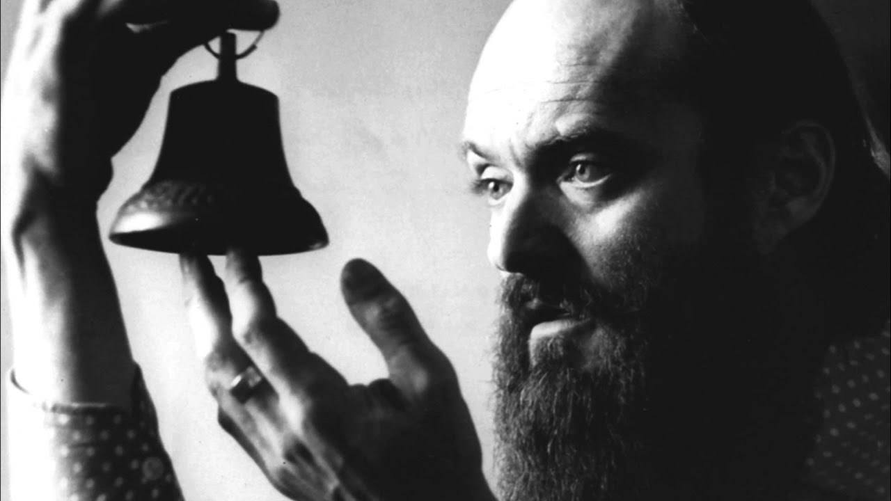

This page is a guide to learning the piece Fratres on a tapping Instrument such as the Chapman Stick or the acoustic Dragonfly DFA. This arrangement would work pretty well on piano or as a duo with a wind instrument with a bit of arranging.
There is a ♪ score/tablature ♪ and fretboard diagrams to help you learn the song.
This guide for 'Fratres' by Arvo Pärt is constructed from the original 1977 version of the piece.

photo courtesy of Mike McAllister